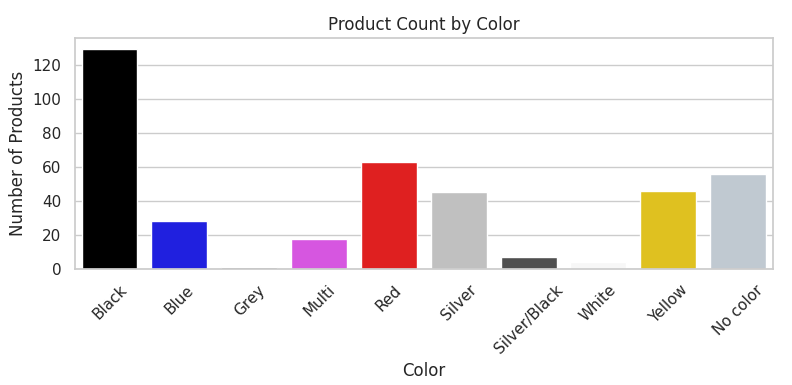

Data Analysis Project
Product Data Cleaning and Visualization with Python & Pandas
This project demonstrates my ability to perform end-to-end data analysis using Python, Pandas, and Seaborn. The goal was to clean, transform, and visualize product data for business insights.
Project Brief
The goal of this project is to analyze product-level data to identify trends, profitability drivers, data quality issues, and inventory distribution patterns. The insights will help stakeholders optimize pricing, production, inventory management, and sales strategies.
🎯 Objectives
- Load and inspect the dataset
- Clean missing or inconsistent data
- Check and enforce proper data types
- Perform basic exploratory data analysis
- Visualize insights using graphs
- Provide recommendations and document limitations
📁 Dataset Overview
- File: 20240224.csv
- Columns: 41
- Records: 397
- Contains multilingual product descriptions, cost/pricing, dates, and category details
🧱 Dataset Structure
| Column Name | Type | Description |
|---|---|---|
| ProductAlternateKey | Object | Alternative product identifier |
| WeightUnitMeasureCode | Categorical | Unit of measurement for weight |
| SizeUnitMeasureCode | Categorical | Unit of measurement for size |
| EnglishProductName | Object | Product name in English |
| SpanishProductName | Object | Product name in Spanish |
| FrenchProductName | Object | Product name in French |
| StandardCost | Float | Cost to manufacture |
| FinishedGoodsFlag | Boolean | Indicates if product is finished |
| Color | Categorical | Product color |
| SafetyStockLevel | Int | Minimum stock level before restocking |
| ReorderPoint | Int | Stock level that triggers reorder |
| ListPrice | Float | Product retail price |
| Size | Object | Product size description |
| SizeRange | Object | Range of available sizes |
| Weight | Float | Product weight |
| DaysToManufacture | Int | Number of days to manufacture |
| ProductLine | Categorical | Product line or category |
| DealerPrice | Float | Wholesale price |
| Class | Categorical | Product classification |
| Style | Categorical | Product style |
| ModelName | Object | Name of the product model |
| EnglishDescription | Object | Description in English |
| FrenchDescription | Object | Description in French |
| ChineseDescription | Object | Description in Chinese |
| ArabicDescription | Object | Description in Arabic |
| HebrewDescription | Object | Description in Hebrew |
| ThaiDescription | Object | Description in Thai |
| GermanDescription | Object | Description in German |
| JapaneseDescription | Object | Description in Japanese |
| TurkishDescription | Object | Description in Turkish |
| StartDate | Datetime | Date when product became available |
| EndDate | Datetime | Date when product was discontinued (if any) |
| Status | Categorical | Product status (e.g., Active, Discontinued) |
| EnglishProductSubcategoryName | Object | Subcategory name in English |
| SpanishProductSubcategoryName | Object | Subcategory name in Spanish |
| FrenchProductSubcategoryName | Object | Subcategory name in French |
🚩 Identified Problems or Challenges in Dataset
- 🔎 Missing Values:
Several key columns contained missing values:
- WeightUnitMeasureCode (122 missing)
- SizeUnitMeasureCode (144 missing)
- Color (56 missing)
- EndDate (197 missing)
- Status (200 missing)
- 🧯 Duplicates: Duplicate rows were found and removed to ensure analysis accuracy and avoid skewed results.
- ⚠️ Inconsistent Data & Outliers:
- Numerical fields (StandardCost, ListPrice, DealerPrice, Weight) were stored as strings with inconsistent formatting (e.g., commas instead of dots as decimal separators).
- Categorical values had issues like leading/trailing spaces and mixed casing (e.g., ' Red ' vs 'Red'). Data normalization was applied.
- Extremely high or low values in pricing fields were flagged as possible outliers or data entry errors and reviewed during EDA.
- 🚫 Irrelevant Columns: Columns with 0 non-null values (e.g., OLE DB Source ProductSubcategoryKey, LargePhoto, ProductCategoryKey) were dropped from the dataset as irrelevant for analysis.
🧼 Data Cleaning Process
- 🧹 Dropped 6 fully empty columns
- 🔄 Replaced comma decimal separators and converted numeric fields to float
- 📅 Converted date columns to datetime format
- 🏷️ Converted categorical columns
- ✏️ Filled missing categorical data with defaults
- 🧮 Filled missing numeric data with column means
📈 Exploratory Data Analysis (EDA)
- Generated descriptive statistics for numeric fields
- Created correlation heatmap to assess variable relationships
- Plotted histograms and boxplots (List Price, Standard Cost, Dealer Price, Weight)
- Visualized product characteristics like profit margins, status, and color distribution
💡 Key Insights
- Significant gaps in weight data may affect shipping analytics
- Product pricing structures are consistent within subcategories
- Product Line M has highest profit margins, while Line T operates at a loss
- Identified outliers in pricing – potentially premium products
⚠️ Limitations
- No unique product IDs — duplicates were inferred
- Some missing values in key columns may skew analysis
- Currency for prices not specified — assumed consistent
📊 Tools & Libraries
- Python
- Pandas
- Matplotlib
- Seaborn
- Jupyter Notebook
📥 Download Materials
Download Raw Dataset (CSV)Download Python Project (IPYNB)
Download Python Project (PY)
📸 Sample Visualization
📊 1. Average Standard Cost, List Price, and Dealer Price by Product Subcategory

🧠 What this graph shows:
This grouped bar chart compares the average Standard Cost, List Price, and Dealer Price across different Product Subcategories.
- X-axis: Product Subcategories (e.g., Mountain Bikes, Road Frames, Helmets, Gloves, etc.)
- Y-axis: Price in USD
- Bars color legend:
- 🟦 Blue: Average Standard Cost (Manufacturing Cost)
- 🟧 Orange: Average List Price (Retail Price)
- 🟩 Green: Average Dealer Price (Wholesale Price)
📌 Insights & Observations:
- Highest Price Categories:
The highest average prices are observed in Mountain Bikes, Road Frames, and Touring Bikes, often exceeding $1000 USD. - Typical Price Relationship:
In most subcategories:
List Price > Dealer Price > Standard Cost,
which reflects a typical retail pricing model. - Profit Margin Insights:
The largest price gaps (and likely the highest profit margins) appear in categories like Mountain Bikes and Road Frames. - Low-Cost Categories:
Products like Gloves, Socks, and Caps show low price levels and smaller profit margins, which suggests high sales volume is needed to generate significant revenue. - Dealer Price Patterns:
The difference between Dealer Price and List Price varies by category, which could indicate different discount strategies for dealers.
📌 Recommendations for Stakeholders:
- ✅ Focus sales and marketing efforts on high-margin categories (e.g., Mountain Bikes, Road Frames).
- ✅ Review pricing and promotional strategies for low-margin categories (e.g., Gloves, Socks).
- ✅ Analyze dealer discount policies in categories where Dealer Price is significantly lower than List Price.
- ✅ Use these insights to optimize production, pricing, and sales strategies.
📈 2. Profit Margin by Product Line

🧠 What this graph shows:
This box plot displays the distribution of profit
margins (calculated as Dealer Price - Standard Cost)
across
different Product Lines.
- X-axis: Product Line codes (
M,R,S,T, andNo linefor undefined/missing values) - Y-axis: Profit Margin (USD difference between Dealer Price and Standard Cost)
📌 Insights & Observations:
- Product Line M:
Shows the highest and widest spread of profit margins, with median profit significantly above other lines.
This indicates a more profitable product line, but with higher variability. - Product Lines R, S, T:
Have lower and more concentrated margins.
Especially Product LineR, which shows several outliers on the negative side, suggesting that some products may be sold below cost. - Outliers:
There are several outliers (both positive and negative) across different product lines, indicating unusual pricing or special cases. - Missing Product Line (
No line):
Products without a defined product line still show consistent positive margins but with fewer data points.
📌 Recommendations for Stakeholders:
- ✅ Investigate why Product Line M is significantly more profitable—possible focus for marketing or product expansion.
- ✅ Review low-margin or negative-margin products in R, S, and T lines to identify possible pricing issues.
- ✅ Address missing Product Line information (
No line) to improve data quality. - ✅ Further analyze outliers to understand unusual pricing or special cases.
📊 3. Profit Margin by Product Subcategory

🧠 What this graph shows:
This box plot displays the distribution of profit margins (calculated as the difference between Dealer Price and Standard Cost) across different Product Subcategories.
- X-axis: Product Subcategories (e.g., Road Frames, Helmets, Socks, Mountain Bikes, Gloves, etc.).
- Y-axis: Profit Margin (in USD), which can be negative, zero, or positive.
📌 Insights & Observations:
- High Profit Margin Categories:
Subcategories like Mountain Bikes, Forks, Headsets, and Cranksets show significantly higher profit margins, with many products exceeding 50 USD in margin and some reaching over 100 USD. - Negative Profit Margins:
Categories such as Bottom Brackets, Touring Bikes, and Caps display negative median profit margins, indicating potential pricing issues or products sold at a loss. - Large Variability:
Mountain Bikes and Forks exhibit wide spread in margins, suggesting inconsistency in pricing or production costs within these subcategories. - Stable Low-Margin Categories:
Subcategories like Gloves, Socks, and Lights show low but stable margins, with smaller interquartile ranges and fewer outliers. - Presence of Outliers:
Several categories, including Mountain Bikes and Road Frames, have noticeable outliers on both the positive and negative sides, indicating unusual pricing or special sales scenarios.
📌 Recommendations:
- ✅ Focus on High-Margin Categories:
Prioritize marketing and sales efforts for Mountain Bikes, Forks, and Headsets, which demonstrate strong profitability. - ✅ Investigate Negative Margin Categories:
Review Touring Bikes, Bottom Brackets, and Caps to determine if negative margins are due to discounting, high production costs, or data errors. - ✅ Address High Variability:
Analyze the wide spread in margins for categories like Mountain Bikes and Forks to improve pricing consistency. - ✅ Review Outliers:
Examine extreme outliers across categories to ensure data accuracy and assess if any special pricing strategies are affecting margins.
📊 4. Product Count by Size and Class

🧠 What this graph shows:
This heatmap illustrates the distribution of product counts based on Size (x-axis) and Product Class (y-axis).
- X-axis: Different product sizes (ranging from numeric sizes
like
38,40, up to70, and categorical sizes likeL,M,S,XL,No size). - Y-axis: Product classes:
H(High),L(Low),M(Medium), andNo class(missing/undefined class). - Color Intensity: Represents the number of products in each size-class combination.
📌 Insights & Observations:
- 'No class' Class:
The'No class'class has a high concentration in sizes 'No size', M, and L, especially with 39 products in size 'No size' category. This may indicate missing or undefined class labeling for many products of these sizes. - High Class (H):
Products classified asHare distributed across almost all numeric sizes (38 to 62), with noticeable concentrations around sizes44to50and also inLcategory. - Low Class (L):
A significant number of products appear in sizes44,50, and60in classL. - Medium Class (M):
Product counts are more evenly distributed across smaller numeric sizes (38 to 50) with lower quantities compared to other classes.
📌 Recommendations:
- ✅ Investigate missing class labels: The large number of
products in
'No class'class should be reviewed and properly categorized for accurate reporting. - ✅ Review size distribution: Consider aligning manufacturing and inventory decisions with the most popular sizes within each class.
- ✅ Analyze Class H: High-class products appear across a wide range of sizes. Understanding demand patterns for these could improve production planning.
- ✅ Further segmentation: Consider cross-analyzing with Profit Margin or Sales data to see which size-class combinations are most profitable.
📊 5. Product Count by Style

🧠 What this graph shows:
This bar chart illustrates the distribution of product counts across different Style categories.
- X-axis: Style categories (U, Unknown, W, M).
- Y-axis: Number of products in each style.
📌 Insights & Observations:
- U (Unisex):
The most dominant style category, with over 250 products, indicating a strong focus on unisex products in the inventory. - Unknown:
Contains around 90 products, suggesting that a significant portion of items have missing or undefined style information. - W (Women):
Approximately 40 products are designated for women’s style. - M (Men):
Very few products fall into this category (less than 10 items), making it the least represented style.
📌 Recommendations:
- ✅ Review Unknown Category:
Investigate and update missing style information to improve data quality and reporting accuracy. - ✅ Assess Men’s Category:
Consider evaluating whether the low number of men’s products aligns with market demand or indicates a potential growth area. - ✅ Focus on Unisex Trends:
Analyze sales performance for unisex products to determine if the high count translates into strong sales, helping inform future inventory decisions.
📊 6. Product Count by Color

🧠 What this graph shows:
This bar chart visualizes the distribution of products by their color category.
- X-axis: Different product colors (e.g.,
Black,Red,Silver,Yellow, etc.). - Y-axis: Number of products available in each color category.
- Color Palette: A pastel color scheme has been used to visually distinguish each color category.
📌 Insights & Observations:
- Black:
The most dominant color in the dataset, with more than 120 products. This indicates a strong preference for black-colored products in the inventory. - Red:
The second most frequent color, with around 60 products. Red also appears to be a popular choice among products. - Silver and No Color:
Both categories show moderate product counts, ranging from 40 to 50 products each. TheNo colorcategory likely represents products without specified color data or those with neutral appearance. - Blue, Yellow, and Multi:
These colors fall into the mid-range with 20–40 products each, showing moderate demand or stock levels. - Grey, Silver/Black, and White:
These are the least represented colors, each with fewer than 20 products, suggesting either low demand or specialized/niche items.
📌 Recommendations:
- ✅ Focus on Black and Red: Given their high counts, these colors may represent high-demand products. Consider aligning future inventory planning accordingly.
- ✅ Review No Color category: Investigate if products in this category are missing color data that should be filled in for accurate reporting.
- ✅ Target Low-stock Colors: For categories like
Multi,Silver/Black, andWhite, assess whether low stock is intentional (e.g., seasonal or specialty items) or if there is an unmet demand. - ✅ Further Analysis: Consider cross-referencing this color distribution with sales performance to identify the most profitable colors.
📊 7. Weght Distribution by Class

🧠 What this graph shows:
This box plot displays the distribution of product weights across different Class categories.
- X-axis: Product Class (H, L, M, No class).
- Y-axis: Product weight (in relevant units).
📌 Insights & Observations:
- Weight Variability:
All classes show a wide range of weights, with noticeable outliers above 200 units, especially in H, L, and M categories. - Typical Weight Range:
Most products in all classes have weights concentrated below 50 units, as indicated by the size of the boxes (interquartile range). - Outliers:
Each class contains several significant outliers, with some weights exceeding 600–1000 units, likely representing large or special items. - No Class:
Products without a defined class (No class) also have a small but consistent weight distribution, with a few outliers.
📌 Recommendations:
- ✅ Review extreme outliers to ensure data accuracy and check for potential data entry errors.
- ✅ Consider analyzing how weight relates to pricing, shipping costs, or sales performance.
- ✅ Investigate the No class category for possible data enrichment.
📌 Final Recommendations for Stakeholders
Based on the analysis of all seven visualizations, several key actions are recommended to help improve profitability, data quality, and decision-making across the product portfolio:
1. Optimize Sales and Marketing Strategies:
- Focus on high-margin and high-demand categories such as Mountain Bikes, Road Frames, and popular color and style segments (e.g., Black, Red, Unisex).
- Consider targeted promotions or inventory expansion for these profitable segments.
2. Address Low-Margin and Negative-Margin Products:
- Conduct a detailed review of low or negative margin categories (e.g., Gloves, Socks, Touring Bikes, Bottom Brackets, Caps, and certain Product Lines like R, S, and T).
- Adjust pricing, production costs, or promotional strategies where necessary.
3. Improve Data Quality and Completeness:
- Investigate and update missing information in key fields like Product Class, Product Line, Style, and Color.
- Reducing the number of products categorized as ‘Unknown’ or ‘No Class/No Line/No Color’ will improve the accuracy of future analysis and reporting.
4. Refine Inventory and Production Planning:
- Use insights from Size, Style, Color, and Class distributions to align production and inventory with actual market demand.
- Focus manufacturing on popular sizes, best-selling colors, and in-demand styles while reviewing underperforming segments for potential rationalization.
5. Explore Cross-Segment Opportunities:
- Conduct further analysis to identify profitable combinations of Class, Size, Style, and Color.
- This can help tailor marketing campaigns, develop targeted product bundles, and improve customer segmentation.